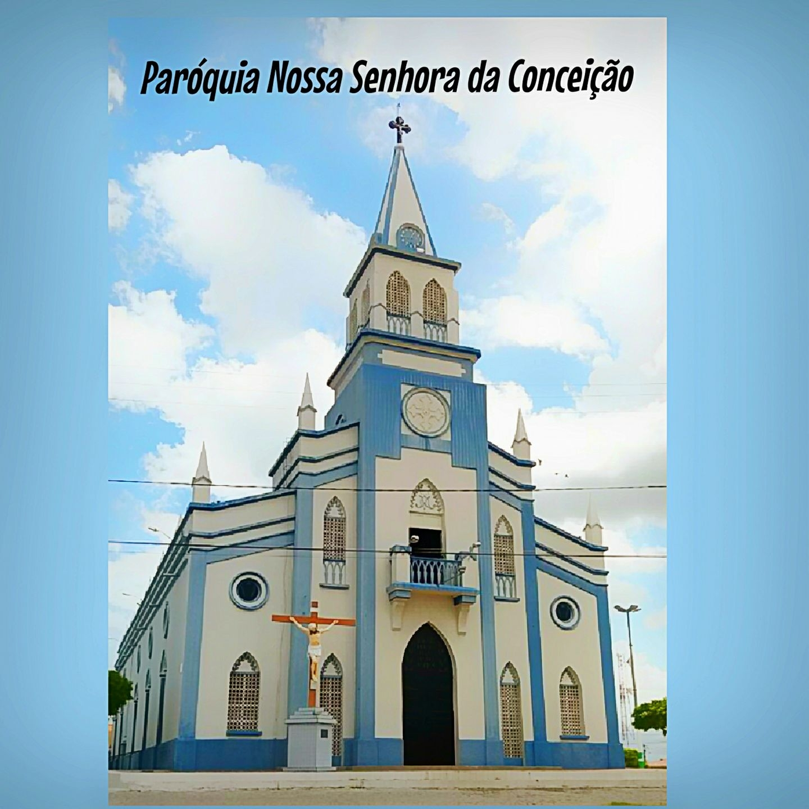

Informações técnicas sobre relevo, população, IDH etc.
| INFORMAÇÕES | |
|---|---|
| Municípios limítrofes | Banabuiú, Morada Nova, Jaguaribara, Jaguaribe, Solonópole, Solonópole e Banabuiú |
| Fundação | 29 de agosto de 1865 (155 anos) |
| Área total | 1 759,722 km² |
| Clima | Semi-árido |
| IDH | 0,645 — médio |
| PIB | R$ 4 484,61 |
| INFORMAÇÕES TERRITORIAIS | |
|---|---|
| Número de habitantes | 18 162 habitantes |
| Superfície de Jaquaretama |
175 972 hectares
1759,72 km² (679,43 sq mi) |
| Densidade populacional | 10,3 ha./km² |
| Altitude de Jaquaretama | 115 metros de altitude |
| Coordenadas geográficas decimais |
Latitude:
-5.61407
Longitude: -38.7668 |
| Coordenadas geográficas sexagesimais | Latitude: 5° 36' 51'' Sul , Longitude: 8° 46' 0'' Oeste |
| INFORMAÇÕES DO MUNICÍPIO | |
|---|---|
| Endereço da Prefeitura Municipal de Jaquaretama |
Jaquaretama
Prefeitura de Jaquaretama
Rua Tristão Gonçalves, 185 JAGUARETAMA - CE, 63480-000 Brasil Work +55 (88) 3576-1305 Fax +55 (88) 3576-1167 |
| Telefone da prefeitura |
(88) 3576-1305
Internacional: +55 88 3576-1305 |
| Fax |
(88) 3576-1167
Internacional: +55 88 3576-1167 |
| Endereço electrónicoda prefeitura |
A carregar...
|
| Site oficial do município | jaquaretama.ce.gov.br |
| INFORMAÇÕES DO ADMINISTRATIVAS | ||
|---|---|---|
| Prefeito de Jaquaretama | FRANCISCO GLAIRTON RABELO CUNHA | |
| Partido politico | PP | |
| INFORMAÇÕES DE TRANSPORTE | |
|---|---|
| Transporte urbano disponível | Metropolitano, Sistema de partilha de bicicletas (Bicicletar) |
| Aeroporto |
Aeroporto Internacional Pinto Martins
Aeroporto Regional do Cariri
187.1 km
Aeroporto Dix-Sept Rosado
162.1 km
|
| INFORMAÇÕES DE DISTÂNCIA A OUTRAS CIDADES | ||
|---|---|---|
| São Paulo : 2168 km | Rio de Janeiro : 1983 km | Brasília : 1511 km |
| Salvador : 819 km | Belo Horizonte : 1678 km | Manaus : 2376 km |
| Curitiba : 2474 km | Fortaleza : 212 km mais perto | Goiânia : 1681 km |
| Belém : 1176 km | Porto Alegre : 3016 km | Guarulhos : 2146 km |
| Campinas : 2121 km | São Luís : 704 km | Recife : 508 km |
| Distância calculada em linha reta! | ||
Conheça mais sobre a história de Jaguaretama.
Os vestígios mais antigos da presença humana no atual município de Jaguaretama se encontram na bacia do rio Banabuiú. Trata-se de diversos instrumentos de pedra, como raspadores, percutores, núcleos e almofarizes, os quais eram utilizados para diversas funções, como caça de animais e preparo de alimentos. Batizado de Santa Clara, esse local foi registrado como sítio arqueológico em 2015. Assim como outras evidências encontradas em Morada Nova e Jaguaribara, essas antigas ferramentas líticas – produzidas geralmente em quartzo e arenito silicificado – são testemunhos das primeiras ocupações do sertão cearense, embora não tenha sido possível datá-las de forma precisa até o presente momento. Da mesma forma, gravuras rupestres em lajedos e matacões de granito da região, sempre próximos aos rios Banabuiú e Jaguaribe, também já foram identificados em Jaguaribara e Morada Nova.
Segundo alguns pesquisadores, a região do Médio Jaguaribe era habitada por diversos grupos indígenas quando da chegada dos primeiros colonizadores europeus, como os Paiacus, Icozinhos e Jaguaribaras. Contudo, a presença dos Paiacus na região parece ter sido predominante entre os séculos XVII e XVIII, sendo certamente os que empreenderam maior resistência aos colonizadores, envolvendo-se nos principais conflitos ocorridos na capitania. Pressionados pela expansão gradual europeia sobre seus territórios entre os rios Jaguaribe e Banabuiú, os Paiacus ainda assim representaram um obstáculo sério ao comércio entre o Ceará e as outras Capitanias do Nordeste Oriental.
Esses conflitos com a população indígena local foram bastante frequentes durante os séculos XVII e XVIII, tendo em vista o papel central que o rio Jaguaribe teve no processo de colonização do Ceará, bem como na expansão da pecuária no sertão. Ocorrida a partir de 1683 e estendendo-se até o início do século XVIII, a chamada “Guerra dos Bárbaros” é um exemplo bastante representativo desse momento da história do sertão, quando Paiacus, Cariris, Janduís, Tremembés, Jenipapos e diversos outros povos indígenas se uniram para impedir a chegada de colonos portugueses na região. Bastante violenta, essa guerra causou a destruição de muitos desses grupos, sendo inclusive convocados bandeirantes paulistas para a supressão dos indígenas, como Domingos Jorge Velho e Manuel Alves de Morais Navarro. Ainda no âmbito desses conflitos, em 1699, o citado bandeirante Manuel Navarro comandou o “massacre do Jaguaribe” que culminou na morte de cerca de quatrocentos Paiacus e o aprisionamento de outros trezentos. Segundo alguns autores, esse ataque aos Paiacus teria sido visto como cruel mesmo pela administração colonial da época, resultando na prisão do bandeirante.
Por outro lado, os relatos escritos produzidos pelos primeiros colonos europeus na região descrevem de forma genérica a população ameríndia, o que limita consideravelmente o conhecimento atual sobre os costumes e cultura dos Paiacus e outros grupos indígenas. Dessa forma, não é possível saber em qual idioma se comunicavam, ou sua relação com troncos linguísticos como o Tupi-Guarani, Macro-Jê e Cariri. Sabe-se, contudo, que eram agricultores e produtores de cerâmica, sendo que suas aldeias certamente não distavam muito dos cursos d’água regionais. Ainda assim, também é possível que a aplicação de termos como “Paiacus”, “Potiguaras” e “Tremembés” não traduza totalmente a complexidade étnica desses primeiros habitantes, provavelmente agrupando diversos grupos em uma só denominação.
O processo de colonização do Médio Jaguaribe, assim como em outras regiões da então capitania do Siará, também foi marcado pela catequização de indígenas, bem como pela criação de diversos aldeamentos. Originalmente criados como forma de “amansar” a população ameríndia local, adaptando-os à cultura europeia e às necessidades produtivas da colônia, esses aldeamentos muitas vezes deram origem aos municípios e distritos atuais do sertão cearense. A partir desse processo paulatino de ocupação da região, sempre seguindo os cursos d’água existentes, surgiram fazendas de criação de gado vacum e cavalar, dando posteriormente origem a localidades como a atual Jaguaretama.
O primeiro povoamento colonial na área do atual município de Jaguaretama, de acordo com alguns autores, se chamava Oriabebú. Segundo as fontes históricas disponíveis, o povoado tornou-se uma freguesia em 1784, sendo batizada de Nossa Senhora da Conceição e criada a partir de um território desmembrado do Curato de Icó, às margens do Riacho do Sangue. Anteriormente conhecido como Riacho das Pedras, esse rio teria adquirido esse nome devido aos confrontos mortais entre moradores do entorno, os quais teriam tingido suas águas de sangue. As hipóteses sobre qual conflito de fato teria ocorrido são várias, todavia: uma carnificina ocorrida entre os índios defensores de Monte e Feitosa, famílias tradicionais do interior do Ceará[20]; um combate entre indígenas genericamente chamados de “Tapuias” e a Bandeira de Matias Cardoso, no começo do século XVIII; ou mesmo uma briga motivada pela divisão das sesmarias locais.
De acordo com o Monsenhor Affonso Pequeno, que visitou a freguesia de Nossa Senhora da Conceição em 1805, esta já contava com quatro capelas, todas construídas por intermédio dos moradores. Uma delas, consagrada à Nossa Senhora da Conceição, “fundada em lugar alto por Antonio de Oliveira Sylva e sua mulher Eugenia Maria Maciel”, servia como matriz. As outras três capelas (São Gonçalo de Amarante, Nossa Senhora das Candeias e Santo Antônio de Pádua) foram erigidas em outras localidades da mesma freguesia. Relativo à esse processo de ocupação sertaneja do território da atual Jaguaretama, há pelo menos um sítio arqueológico conhecido, localizado a cerca de três quilômetros da margem direita do rio Banabuiú. Registrado em 2015 junto ao IPHAN, o sítio Laranjeiras se trata de restos arruinados de uma casa, provavelmente habitada entre os séculos XIX e XX.
A história do município de Jaguaretama também se manifesta através de seu patrimônio imaterial e material, tombados ou registrados em escala federal e/ou estadual. A Literatura de Cordel, manifestação cultural bastante difundida em toda a Região Nordeste, foi registrada em 2018 como patrimônio cultural brasileiro, assim como o Teatro de Bonecos Popular do Nordeste – registrada em 2015[25]]. Por outro lado, segue em processo de instrução para registro pelo IPHAN as Matrizes do Forró, os Cocos do Nordeste e o Repente.
Saiba mais sobre os melhores lugares e o que fazer em Jaguaretama.
Paróquia Nossa Senhora da Conceição - Jaguaretama

Veja como chegar nos melhores pontos de Jaguaretama.